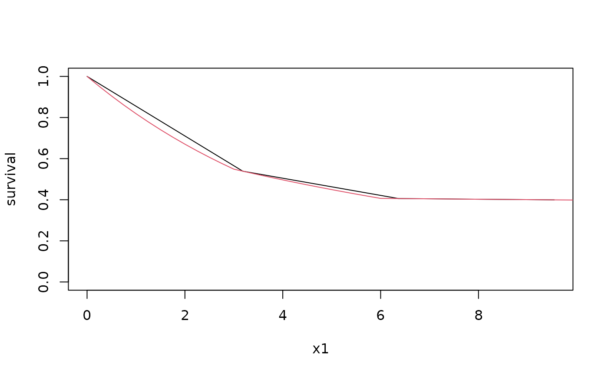

Computes the cumulative distribution function (CDF) or survival rate for a piecewise exponential distribution.
Arguments
- x
Times at which distribution is to be computed.
- duration
A numeric vector of time duration.
- rate
A numeric vector of event rate.
- lower_tail
Indicator of whether lower (
TRUE) or upper tail (FALSE; default) of CDF is to be computed.
Details
Suppose \(\lambda_i\) is the failure rate in the interval \((t_{i-1},t_i], i=1,2,\ldots,M\) where \(0=t_0<t_i\ldots,t_M=\infty\). The cumulative hazard function at an arbitrary time \(t>0\) is then:
$$\Lambda(t)=\sum_{i=1}^M \delta(t\leq t_i)(\min(t,t_i)-t_{i-1})\lambda_i.$$ The survival at time \(t\) is then $$S(t)=\exp(-\Lambda(t)).$$
Examples
# Plot a survival function with 2 different sets of time values
# to demonstrate plot precision corresponding to input parameters.
x1 <- seq(0, 10, 10 / pi)
duration <- c(3, 3, 1)
rate <- c(.2, .1, .005)
survival <- ppwe(
x = x1,
duration = duration,
rate = rate
)
plot(x1, survival, type = "l", ylim = c(0, 1))
x2 <- seq(0, 10, .25)
survival <- ppwe(
x = x2,
duration = duration,
rate = rate
)
lines(x2, survival, col = 2)
